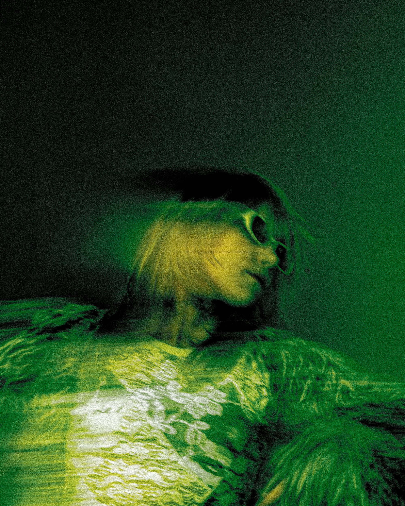
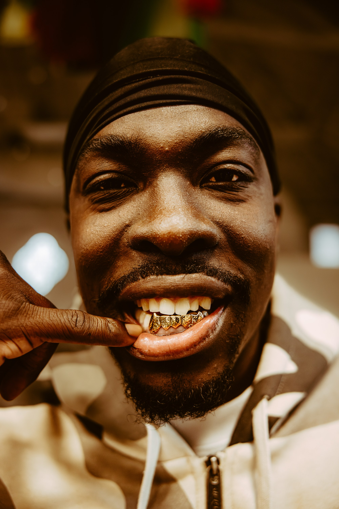
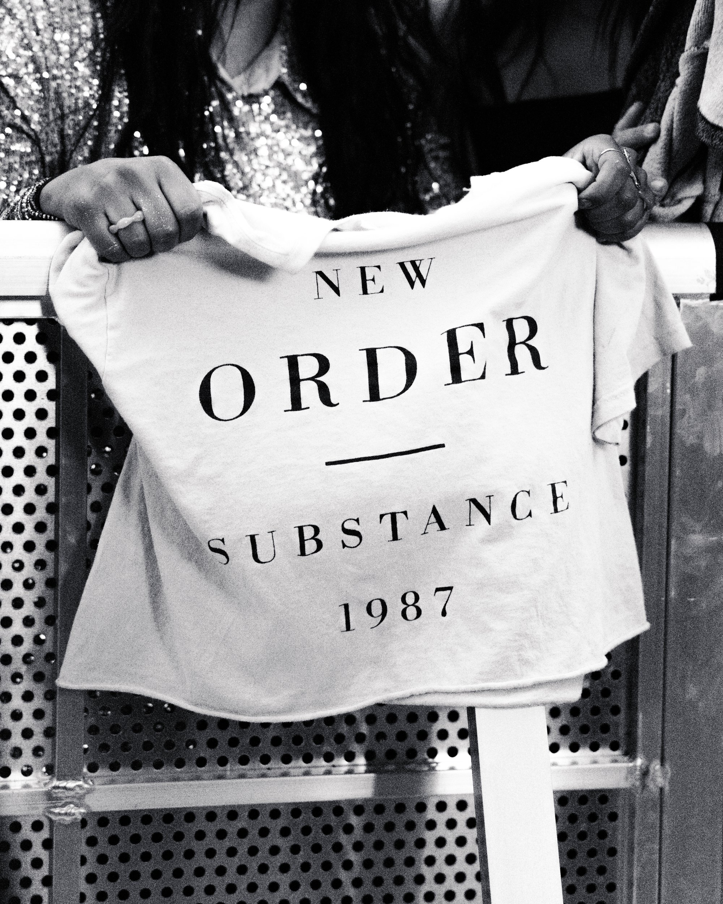
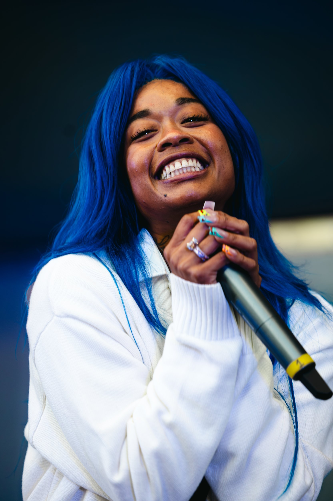
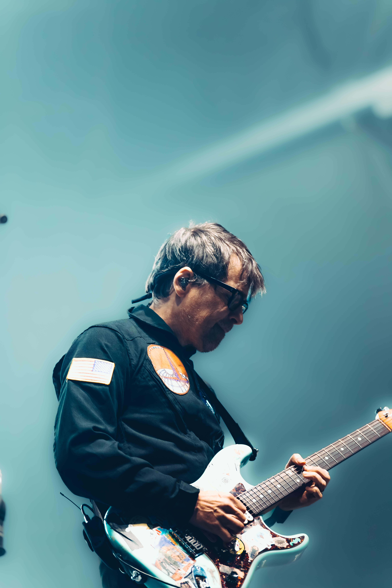
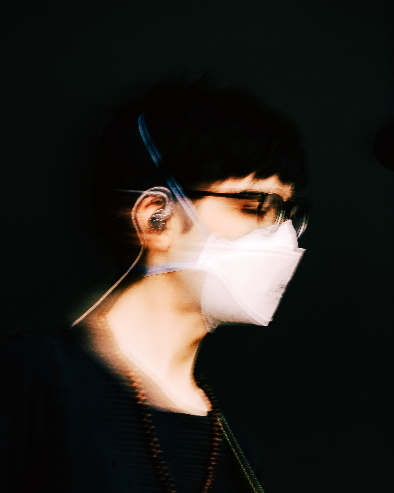
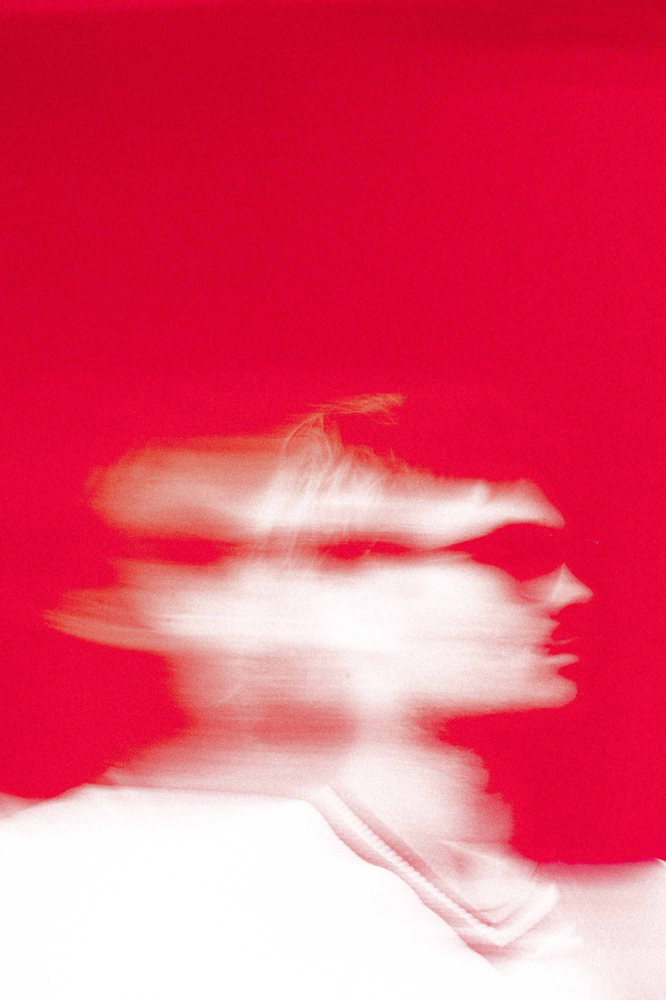
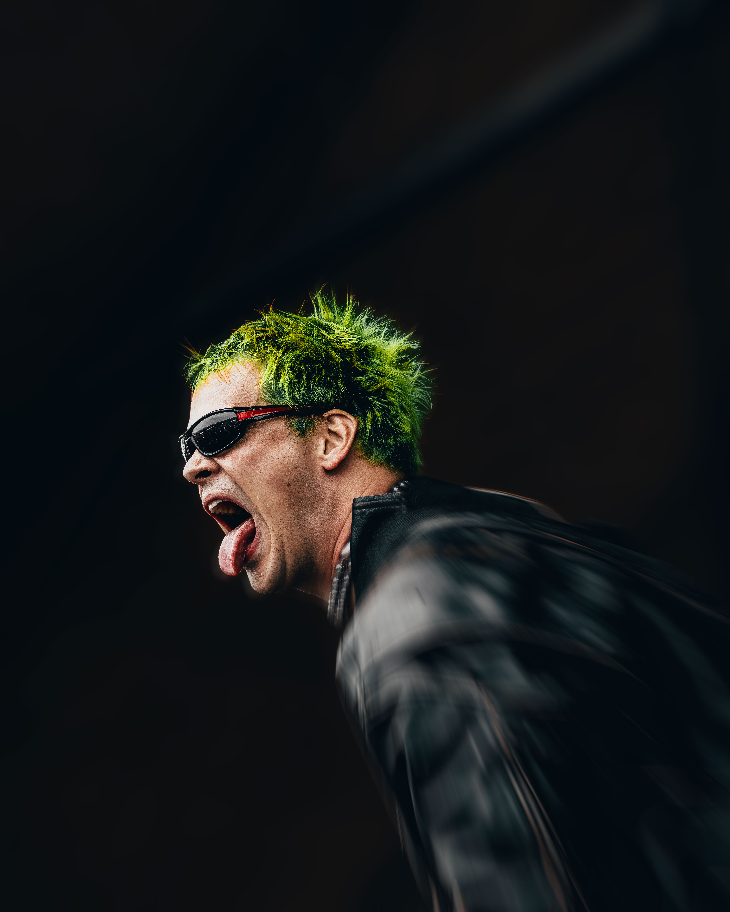
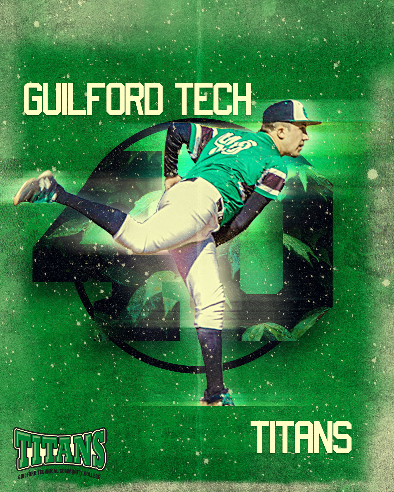

Photography
Capturing the scene.










Creative at Apple. Editor in Chief of FreshOffTheScene. I build content, shoot artists, edit video, and tell stories that actually resonate — across photo, video, and design.
I'm a Greensboro-based creative with a degree in Advertising & Graphic Design and hands-on experience across content production, photography, videography, and brand strategy.
At Apple, I translate complex technology into engaging, human experiences every day. As Editor in Chief of FreshOffTheScene, I co-founded a music and culture publication — growing an audience, securing a Live Nation partnership, and producing content that resonates.
I've shot major festivals, built brand identities, directed recaps, and designed graphics for real clients. I'm passionate about music, sports, and culture — and I'm ready to bring that full-time to a company doing meaningful work in media and content.
A music and culture publication I co-founded dedicated to covering the most diverse voices in the scene — from emerging artists to major festival coverage. Editorial strategy, photography, video production, and live event access all under one roof.
Translate complex technology into accessible, engaging experiences for customers of all skill levels. Facilitate Today at Apple sessions achieving 100% Delivered Bookable (MTD) and 97% Likelihood to Recommend. Collaborate cross-functionally across Genius Bar and Specialist teams.
Co-founded and lead a music and culture publication. Produce short-form video, photography, and editorial content 3–5x per week. Grew to 41.7K monthly Instagram views and 5–10K monthly website visitors. Secured Live Nation partnership. Launched print magazine — 200+ copies sold, 212% profit increase.
Photographed and filmed Kilby Block Party festival across multiple stages. Captured performances by Weezer, Wisp, Wallows, Suki Waterhouse, and more. Produced the official FOTS × Kilby Block Party 4K recap.
Managed team scheduling, coaching, and daily operations. Provided technical guidance to customers on AV and photography equipment. Reinforced service standards and maintained inventory documentation.








Full festival recap coverage from In Tha Fest, Atlanta. Shot, edited, and produced for FreshOffTheScene.
Event recap produced and edited end-to-end for FreshOffTheScene. Full video production from shoot to post.

Full brand identity system including stationery, packaging, signage, and business collateral. Adobe Illustrator & Photoshop.

Promotional graphic for GTCC Titans baseball. Composite design with photo manipulation, custom typography, and layered effects.
Multi-page editorial layout design for FOTS's inaugural print run. Typography, photo placement, and print-ready formatting in InDesign.
Open to full-time roles in content creation, social media, and digital publishing. Remote preferred — also open to Nashville, Atlanta, Charlotte, and select relocation for the right company.